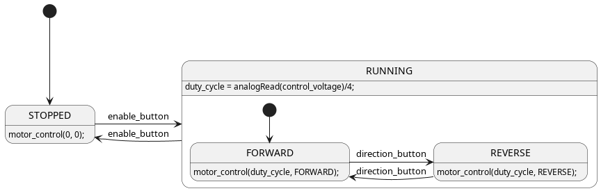

The transfer function is very useful when analyzing the transient behavior of the motor. By using the laplace transform, we arrive at the following results for the mechanical and electrical differential equations:
\[s J \omega_m(s) + B \omega_m(s) = k_T I_a(s) \Rightarrow (sJ + B) \omega_m(s) = k_T I_a(s)\]
A transfer function relates some input to some output. We have several possible transfer functions for the DC motor depending on the value which is of interest.
The motor speed for a given armature voltage
The motor speed for a given torque
The motor armature current for a given armature voltage
Similar derivations can be performed for the other transfer functions if needed.
By choosing the mechanical angular velocity and the armature current as state variables, we arrive at the following state-space representation for the motor:
It is relatively straight forward to apply control signals which converts the rotational energy of the brushed DC motor back to electrical energy. This is the most energy efficient way of breaking the motor, as the energy can be recovered and used again for another purpose. Regenerative operation on the arduino board can be problematic, as the USB power supply does not support reversed energy flow. The same is true if the supply comes from a battery which is not rechargeable. If one is pushing energy in to a DC source which does not support regenerative operation, the result will typically be that the voltage at the filtering capacitors in the DC section will increase. At some point the voltage will exceed the rating of the capacitors, and magic smoke will come out. Thus the first ting you have to do before considering regenerative operation, is to verify that the source will be able to handle it.
The trick to achieve regenerative braking it to increase the voltage coming from the motor to a level above the source voltage which was previously supplying the motor. This will allow the current direction to reverse, and thus the power flow will also be reversed. The voltage produced by the motor is proportional to the speed as well as on the magnetic field in the stator. It will always be lower than the source voltage, unless one of the following conditions are met:
For a electrically excited DC motor, if the field current is increased.
For any DC motor if some external mechanical force is driving the motor to a sufficiently high speed.
Unless you have a field winding (the small DC motor in the examples provided in this lesson does not) you will have to increase the induced voltage after it has been generated. In order to increase the motor voltage an additional external voltage converter (these are known as boost converters) could have been placed between the motor and the source, and activated when entering breaking mode. It turns out however that it is possible to exploit the internal inductance of the motor in order to increase (boost) the voltage.
If the transistors are switched correctly and at an appropriate switching frequency the only condition needed to obtain the regenerative braking is that the duty cycle of the PWM in reduced to a value below the previous steady state duty cycle. The following block diagram gives some insight in to the internal operation of the L293D:
If the enable (EN) signal is low, the control signal (A) is ignored and the output goes in to a high impedance (high Z) state. When the enable signal is high, the output follows the control signal (A). By applying PWM to the enable signal and leaving the A signals fixed regenerative braking will be impossible. Whenever the output is in a high Z state, the motor current will have to circulate through the freewheeling diodes. If however the PWM signal is applied to e.g. 1A while 2A is low, a reduction in duty cycle will allow the voltage to be boosted by the motor inductance. For the opposite rotational direction the PWM signal should be applied to 2A while 1A is low.
In the following example a potentiometer is used to control the voltage level (i.e. speed) of the motor, one push button changes rotation direction, and the other turns the drive on and off. The main idea is pretty much the same as the first program. The code is a bit more sophisticated and safer to use. The control software is built around a hierarchical State Machine, that simplifyes the management of the different states in which the motor drive may be operating. Put attention of the usage of typedef.
The following state diagram depicts the operation of the software:

The following source code listing is the complete software for the motor drive:
Show/Hide Code
#include<Arduino.h>constuint8_tenable1=6;constuint8_tinput1=5;constuint8_tinput2=4;constuint8_tenable_button=12;constuint8_tdirection_button=11;constuint8_tcontrol_voltage=A0;//#define DEBUGtypedefenum{FORWARD,REVERSE}direction_t;typedefenum{RUNNING,STOPPED}motor_state_t;voidmotor_control(uint8_tduty_cycle,direction_tdirection);intbuttonPressed_debounce(uint8_tdigital_input,uint8_tdebounce_delay);voidsetup(){pinMode(enable1,OUTPUT);pinMode(input1,OUTPUT);pinMode(input2,OUTPUT);pinMode(enable_button,INPUT);pinMode(direction_button,INPUT);Serial.begin(9600);}voidloop(){motor_state_tmotor_state=STOPPED;direction_tmotor_direction=FORWARD;uint8_tduty_cycle=0;for(;;){duty_cycle=analogRead(control_voltage)/4;#ifdef DEBUGSerial.print("Duty cycle: ");Serial.print(duty_cycle);Serial.print("\n");delay(1000);#endif/* * State machine for motor control. */switch(motor_state){caseRUNNING:if(buttonPressed_debounce(enable_button,50)){motor_state=STOPPED;Serial.println("Motor stopped.");}switch(motor_direction){caseFORWARD:if(buttonPressed_debounce(direction_button,50)){motor_direction=REVERSE;Serial.println("Motor direction reversed.");}motor_control(duty_cycle,FORWARD);break;caseREVERSE:if(buttonPressed_debounce(direction_button,50)){motor_direction=FORWARD;Serial.println("Motor direction forward.");}motor_control(duty_cycle,REVERSE);break;default:motor_state=STOPPED;break;}break;caseSTOPPED:if(buttonPressed_debounce(enable_button,50)){motor_state=RUNNING;Serial.println("Motor enabled.");}motor_control(0,REVERSE);break;default:motor_state=STOPPED;break;}}}voidmotor_control(uint8_tduty_cycle,direction_tdirection){if(direction==FORWARD){digitalWrite(input1,HIGH);digitalWrite(input2,LOW);}else{digitalWrite(input1,LOW);digitalWrite(input2,HIGH);}analogWrite(enable1,duty_cycle);}/* * Check if button is pressed, i.e. if it is high, and it was low before. * This version includes a debounce timer. * * The debounce time is stored as an array of 16 32-bit integers, thus it is * not very memory efficient. */intbuttonPressed_debounce(uint8_tdigital_input,uint8_tdebounce_delay){staticuint16_tlastStates=0;// Store the states of digital input 0 - 15.staticuint32_tlastEdgeDetect[16]={0};// Store the time of the last rising edge.uint8_tstate=digitalRead(digital_input);// Check if the state of the digital input has changed.if(state!=((lastStates>>digital_input)&1)){lastEdgeDetect[digital_input]=millis();}if((millis()-lastEdgeDetect[digital_input])>debounce_delay){lastStates^=1<<digital_input;// Store the current state of the digital input.returnstate==HIGH;}returnfalse;}


![STATE NORMAL {
[*] --> STOPPED
STOPPED -> ACCELERATING : start_stop_button
ACCELERATING -> RUNNING : setpoint_reached
ACCELERATING -> BREAKING : start_stop_button
RUNNING -> BREAKING : start_stop_button
BREAKING -> STOPPED : zero_reached
BREAKING -> ACCELERATING : start_stop_button
STOPPED: motor_control(0, 0);
}
[*] --> NORMAL
NORMAL -> EMERGENCY_STOP : emergency_stop_button
EMERGENCY_STOP -> NORMAL : start_stop_button
EMERGENCY_STOP : motor_control(0, 0);](../../_images/plantuml-1b8c525a6f615e0ab932f955dd08b239fd4c370d.png)